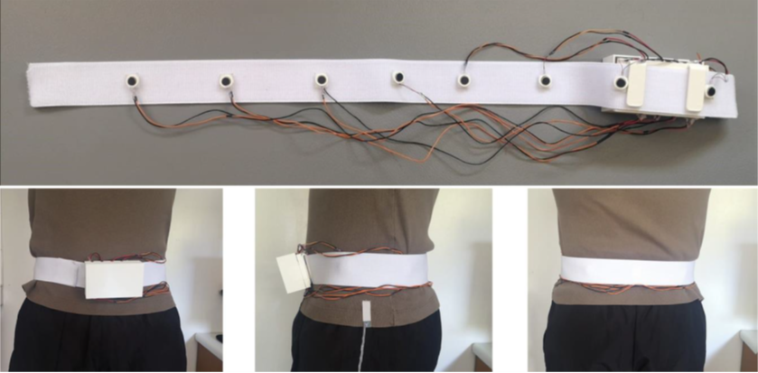

InSignum
As you can see in my résumé I know how to sign language. This is because both of my parents are deaf. As a Child of Deaf Adults (CODA) I grew up seeing the problems and inconveniences of missing sounds implied to them and how they had to made efforts and to develop alternative strategies to be aware of this environmental information that most of us take for granted.
This led me to work on InSignum, a personal project (partially framed within academia) that exploit other senses as a substitution for hearing.
I would love to increases Deaf and hard of Hearing people (DHH) quality of life for real with this project, as such I have been featured in the European Institute of Techonolgy Startup Contest 2020.
The problem
Environmental sound awareness provides us with meaningful information about our surroundings, moreover, hearing is often the exclusive sense for the detection of many everyday life events. However, Deaf and Hard of Hearing (DHH) people have the impossibility, or at least the challenge, to perceive these informative signals decreasing their quality of life consequently.
The process
Although I know first-hand the problem, sign language and the deaf culture and its idiosyncrasy I did not neglect the fundamental aspects of User Centered Design Being a proxy user helped me to empathize with users and being more conscious and closer to the problems they encounter and their needs.
User research
Semi-structured interviews regarding their problems and needs did not add much more information that the one I already had; however, it was a good to confirm insight.
Throughout my life I have seen multitude of occasions where my parents were missing sound awareness from life-threatening events such an approaching car honking to everyday convenience like knowing when the washing machine is beeping to know when to take out the clothes.
One of the most used strategies reported to obtaining information is associating visible cues the sound source. This strategy could be either automatized or manual. For example, many deaf people install a complementary lightning system which turn on lightbulbs when someone rings the bell, whereas turning on the light when the extractor hood is working shows a more adaptative example.
These systems lack portability and do not tackle missing sound awareness outdoors. Thus, portable or wearable solutions were asked by the interviewees.
Visible cues can work well in indoors condition, especially if the users are familiar with the space. But context matters! What can be good in one context does not have to be good for another. In fact, besides potential visibility problems, using lights in outdoors that can be visible for the user arise social issues and as they would be visible by others as well and many participants dislike grabbing the attention of other people. Thus, DHH people ask for more discreet sound awareness solutions.
Exploring some approaches with design artifacts
Smartlight system
The existence of these lightning system allowed me to build on top of a concept already familiar for many deaf people. The idea was upgrading it with newer technology such multi-coloured LED and, Internet of Things (IoT) capabilities creating a kind of a smart home.
To introduce the concept and elicit reaction some teammates and I, developed a hardware and software prototype of a house equipped with RGB LEDs which illuminate the path towards the sound source indicating the nature of the sound via the colour of the lights. The following video showcases the concept of how would a deaf person interact with the system.
We also added some control features using a smartwatch to fulfil some needs and test ideas from our brainstorming sessions.
Wearable
Touch sense was the option to go to offer a discreet sound awareness solution.
As this prototype was harder to develop some other teammates and I decided just to represent the concept. For that we made a video showing how a vibrating wearable would work.
First, you can see several problematic situations for deaf people that are later repeated, this time, showing how their life would be using the wearable. You can also see us working on the wearable prototype
Although both concepts were well received the "all-in-one" nature of a wearable was preferred as it would serve for both, indoors and outdoors contexts.
I continued with the project from this moment on and the next step was obvious, I should delve into the wearables field. Research in this aspect throw multitude of form factors, requirements depending on contexts and social considerations.
In parallel with this state-of-the-art research, I did more surveys, focus groups and, interviews as part of user research and User Centered Design.
As in any iterative process there are many outcomes and loops within. However, this section shows the last outcome from the project.
One of the most common answers when I asked for opinion for wearables was that without trying, they could not do more than guess. Being conscious about that imagining and experiment are two different things I started to test fast if vibration was suitable feedback and if mapping loudness with vibration intensity was adequate.
The outcome
The following image shows the prototype with eight vibration actuators distributed along a Velcro band which holds the box containing the circuitry and its placement around the waist.
The results of the experiments indicate that the solution has potential, and I am actually working further on smartlight systems and wearable systems that provide deaf people with the perception of sound in everyday situations through haptic and sight feedback to make the life of Deaf and Hard of Hearing people easier.
If you want to know more follow us on Facebook or Instagram. If you want to participate in the project feel free to contact me, I will be glad to hear from you!